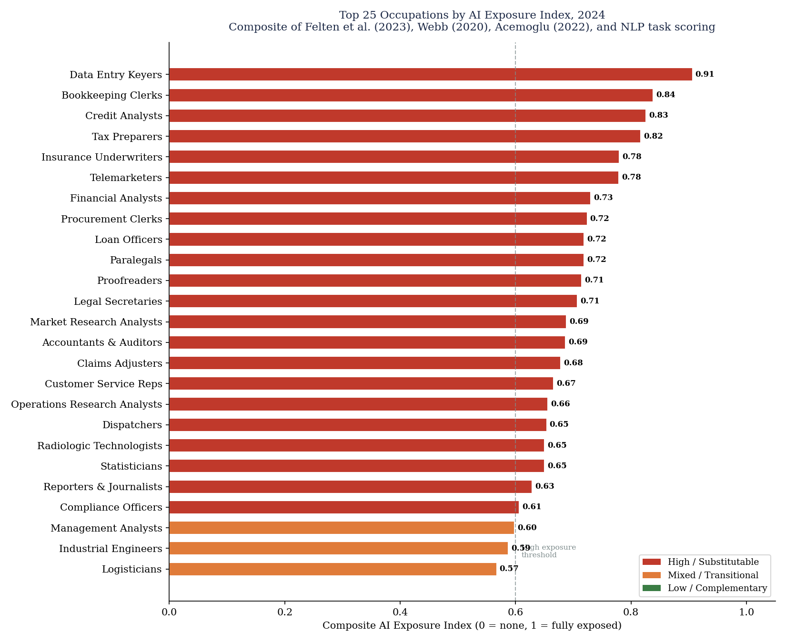

L. Maharaj specializes in the quantitative study of economic and sociological systems. Building models that reveal the patterns behind economic and social changes of the past and present. The captivation of both sociological and economic storylines displays how the world worked previously, how it works now, and a glimpse of the future. All projects and research presented here are entirely personal and independent — unaffiliated with and not representative of any institution, agency, or employer.
Work positioned at the intersection of quantitative methods and social inquiry — finding structure in systems that govern everyday life.
A structural analysis of international holdings of U.S. securities, exploring the implications for capital flows and financial stability.
An examination of optimally weighted measures of GDP and GDI to produce a more accurate composite indicator of economic output.
Pinpointing regime shifts in WTI and Brent crude from geopolitical and macroeconomic shocks using the Bai-Perron multiple structural change framework, 1990–2024.
A data-driven sociological profile of Hindu Americans, examining attainment in education and income alongside statistical crime patterns within the community.
A quantitative examination of ethnic group mobility across income brackets, tracing generational shifts in economic stratification across the United States.
A data-driven analysis of Trump's second-term tariffs on U.S. trade with China, Mexico, and Canada — tracking import shifts, trade diversion, and price effects through October 2025.
An anthropological data study examining how modernization and urbanization influence religious participation and the evolution of social values across cultures.
A political science analysis investigating how economic uncertainty and income anxiety correlate with shifts in voting patterns and electoral outcomes across regions.
A data-driven profile of immigrant workers covering labor force participation, earnings gaps, assimilation trajectories by years since arrival, generational convergence, and outcomes by country of origin.
A data-driven analysis of how unemployment, food assistance, and government transfer programs are distributed across racial and ethnic groups in the United States.
A geographic and statistical mapping of hate crime incidence across the United States, identifying spatial patterns and correlations with socioeconomic and political variables.
A comprehensive analysis of who bears the federal tax burden across income groups — covering income taxes, payroll taxes, corporate incidence, and excise taxes, with historical trends and international comparisons.
A rigorous technical stack built for reproducible, peer-grade analysis.
A sample of current work. Full write-ups and supporting visuals live in Projects.
A machine learning analysis of which U.S. occupations, college majors, states, and metros are most exposed to AI-driven labor-market disruption. The strongest risk is concentrated in routine white-collar information work such as data entry, bookkeeping, underwriting, tax preparation, and legal-support roles rather than in manual labor.
View Project